Gallery
These colorized photographs and their descriptions come from the Daily Mail collection of World War II tank photographs.
I included these images because they show that, despite the romanticization of World War II tank warfare, these machines were operated by real people. Whether they fought for Nazi Germany or the United States, the human cost of the conflict was immense. The tragic loss of life from 1939 to 1945 makes these photographs worthy of thoughtful and respectful study.
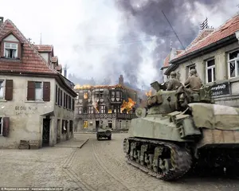
The M4A3 Sherman had a five-person crew. Its rotating turret and stabilized main gun let crews engage targets while supporting infantry during urban advances.
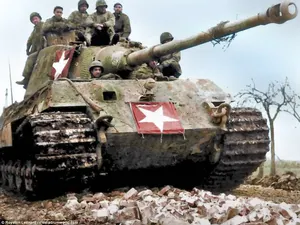
The Tiger II combined thick, sloped frontal armor with a powerful 8.8 cm KwK 43 gun. Its 70-ton weight strained its drivetrain and made recovery difficult.
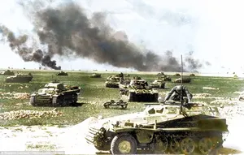
These German armored vehicles supported Operation Barbarossa's fast advances across the Soviet Union. Panzer units depended on radio coordination, combined arms, and continuous fuel deliveries.
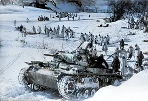
The Panzer III was Germany's principal early-war anti-tank vehicle. Later versions received improved armor and a 5 cm gun, but Soviet T-34 tanks surpassed it.
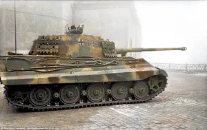
This Tiger II served with the 503rd Heavy Panzer Battalion. In Budapest, its crew used the vehicle as a mobile strongpoint within constrained urban streets.
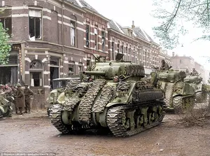
These Shermans served with the Governor General's Horse Guards. Canadian crews used radios to coordinate movement with infantry during Arnhem's liberation.
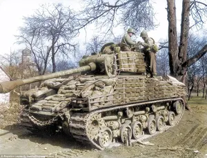
This M4A3 Sherman carries field-applied sandbags intended to reduce damage from anti-tank weapons. The added weight stressed the suspension and offered uncertain protection against shaped charges.
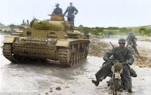
This German Panzer operated in hot, dusty North African conditions. Crews needed effective air filters, frequent maintenance, and dependable fuel supplies to keep tanks operational.
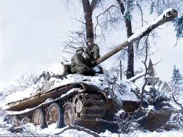
The Panther paired an angled glacis plate with a long-barreled 7.5 cm gun. It offered excellent anti-tank performance, but its complex drivetrain required intensive maintenance.
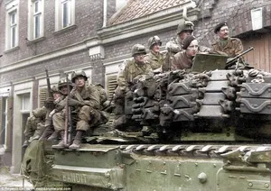
The Churchill infantry tank featured heavy armor and strong cross-country climbing ability. Its wide tracks and low gearing helped it cross difficult ground while carrying airborne troops.
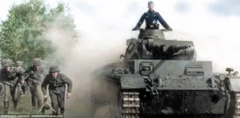
German Panzer divisions combined tanks with infantry, artillery, engineers, and reconnaissance units. Radio-equipped crews coordinated these elements for concentrated attacks and mobile defense.
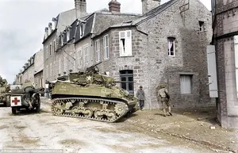
The squadron used fast, lightly armored vehicles to locate enemy positions and routes. Reconnaissance crews prioritized mobility and communication instead of heavy armor and large guns.
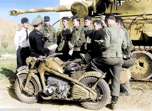
The Panzer VI Tiger I mounted an 8.8 cm KwK 36 gun and thick vertical armor. Its combat power came with high fuel use and demanding maintenance.
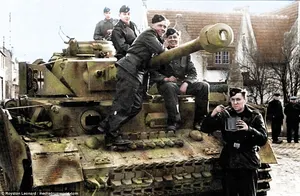
The 9th SS Panzer Division used German tanks and assault guns during the Normandy campaign. Allied aircraft, fuel shortages, and mechanical losses restricted its operational mobility.
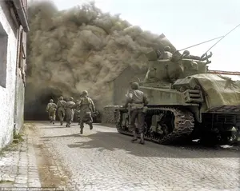
The tank gives advancing infantry mobile firepower and armored protection in confined streets. Infantry also protects the vehicle from nearby anti-tank teams and concealed threats.
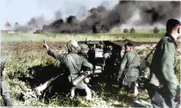
The German crew uses a direct-fire anti-tank gun against Soviet armor. Gun teams relied on camouflage, prepared positions, and flank shots to defeat better-protected tanks.
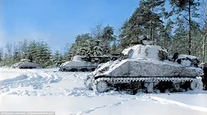
The M4 Sherman balanced firepower, mobility, and mass production. In winter operations, crews faced reduced traction, difficult maintenance, and engines that were harder to start.
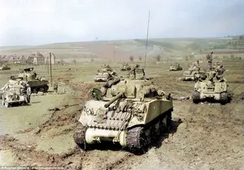
These M4A3 Shermans used Ford GAA gasoline engines. The 9th Armored Division employed them for mobile exploitation after American forces broke through German defenses.